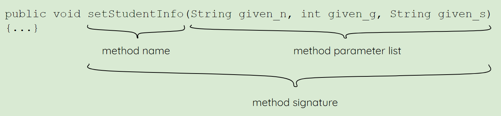

Prerequisite: Java Basic Knowledge
Topic goals
- understand classes as building blocks of Java
- learn different ways to write comments inside a Java program
- learn the basics of a main() method
- learn about imports
1. understand classes as building blocks of Java
What are classes?
Let's kick off with a basic fact of Java: Classes are the basic building blocks of Java
. That's nice, but what are classes in Java?
If you have programming experience in another language, you probably have already learnt about objects and object constructors, and in Java, classes are basically the object constructors. If you have not learnt about objects before, they are in a sense like what we call objects in real life. Just as an object in reality has some describable attributes and functions, so do objects in Java. In light of that, a Java class is like a blueprint for creating objects in Java. For example, you may want to create multiple student objects in Java to represent a group of students in the real world. To do that, you would first create a Student class, and then use that class to create the student objects you need.
Note that a class in Java always starts with a capital letter. That's why in the above we have a "Student" class, instead of a "student" class. When it comes to other things in Java, they typically start with a lowercase letter so as to differentiate themselves from the classes.
Members of a class: Fields & Methods
Let's start with fields. A field is a variable inside a class. For example, a Student class may include the following fields as attributes:
- name
- grade
- school
These fields are set up so that for each student object we create, we can have different values assigned to them. For example, if we make a object student_A out of the Student class, we can have personal data about the student stored in the object which would help us do things with it later. When it comes to doing things with an object, we are talking about their methods. A method is a block of code in that would be executed when you call it. For example, a Student class may provide one method to display the name, grade and school data of a student object, and another method to set/update those data:
class Student { // declaring a Student class
private String name; // setting up (declaring) the fields
private int grade;
private String school;
public void printStudentInfo() // set up a method to display the information{
System.out.println("Name: " + name + "; Grade: " + grade + "; School: " + school); // System.out.println() is how to print a line to the console
}
public void setStudentInfo(String given_name, int given_grade, String given_school) // set up a method to set the information of a student
name = given_name;
grade = given_grade;
school = given_school;
}
}
If you are new to Java, you would probably find the above hard to grasp at first. Don't worry, the main take-away here is the concepts of fields and methods. As for the code, we will delve into the details and see more examples later.
Having said that, with regards to methods, it would be beneficial to get familiar with the basic syntax of it right away:
As shown in the above, setStudentInfo is the method name by which we can call the method, and the parentheses following it include the method parameter list. As we have seen with the printStudentInfo method though, the method parameter list can be empty (therefore taking no argument), but the parentheses must still be there.
We will cover methods in greater details later. For now, just keep in mind that a method has a method name and method parameter list, and these two combined are commonly referred to as the method signature.
2. learn different ways to write comments inside a Java program
We have seen some comments already. In the above, the // (double forward slash) is used to indicate the start of a comment until the end of line (i.e. everything starting from // on that line gets ignored). Comments are helpful in helping other programmers understand what you are coding. They are generally a good practice, and are highly appreciated for some more complex logic that would not be readily consumed without some explanations.
Besides //, another way to write comments in Java is with /* everything in between will get ignored */. This is helpful when writing multi-line comments. For example:
/* <-- Start of the comment
You may write anything in between
Include whatever information that you think is necessary
So that the program gets easier for others and yourself to read
End of the comment --> */
There is actually a third way to write comments in Java, but it is specifically made for Javadoc.
As stated in this Wikipedia entry, Javadoc is a documentation generator [...] for the Java language for generating API documentation in HTML format from Java source code.
We will not talk about Javadoc in details in this set of notes, but feel free to learn more about it on this official Oracle entry.
To write comments for Javadoc, simply start with /** (yes, two asterisks here) and end with */ (similar to the previous one, this can span multiple lines).
3. learn the basics of a main() method
Here is another important fact of Java: A Java program begins execution with its main() method.
In other words,
the main() method is the bread and butter of a Java program as without it, Java programs would not know where to start. Below is how you would write a
main() method:
public class Game {
public static void main(String[] args){
// do something or nothing
}
}
A main() method always has the modifiers public, staic, the return type void and surely the method name main. We will talk more about modifiers and return types in Topic 3: Object-Oriented Programming Concepts. For now, it suffices to know that these are required when writing the main() method.
As for the String[] args which is the only method parameter, it is actually a String array which takes in any number of String(s) you provide. This explains why when we run a Java program from the command line, we can provide some arguments as they are taken as strings by the program's main() method. Let's have a look at an example below to make sure you hammer this notion home.
Consider the following silly java file:
public class Hello {
public staic void main(String[] arguments) { // it is not a must to call it args, you can call the parameters whatever you want
for (String argument: arguments) { // a for loop to loop through the arguments (covered later)
System.out.println("Hello " + argument + "!"); // print out Hello and the argument as a line for every argument given
}
}
}
Let's say we have compiled this java file to a class and now run the class in a terminal with the following command:
java Hello robots mice pizzas "cats and dogs"
Then we will get back 4 separate lines of output in the terminal:
Hello robots!
Hello mice!
Hello pizzas!
Hello cats and dogs! // Note how quotation marks can group words into a single argument
Surely, the main() method can do a bunch of other things with the arguments other than printing them out, but the idea here is just to showcase the basic usage of the main() method, and why it has the parameter String[] args.
One last note here, besides writing the parameter as String[] args, we can also write it as String args[] which is simply another accepted way to denote a String array in Java. We will learn more about these ways of declaring an array later. Also, we can write the parameter as varargs like this: String... args. Varargs are an arbitrary number of arguments, which in the case of a main() method, is another suitable parameter for taking whatever number of arguments.